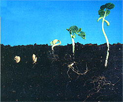
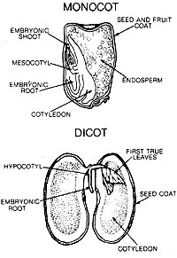

- Georgie Starbuck Galbraith
"Why should I go through all that trouble when I can just pick up a six-pack at the store?" I've heard that comment made in reference to my homemade beer, but it's never been repeated after the brew was tasted and the costs compared. And you've probably been asked that same question if you've ever told people you raised seedlings from scratch, as we do at MOTHER's gardens. Of course, it's easy to answer by saying that seed starting gives us something to dirty our fingernails with when the view outside says spring isn't quite here yet, or that we enjoy being part of the whole process from seed to harvest, but those rationales are only the tip of the cotyledon.
When stopping by the local nursery's "six-pack rack," I've typically found such "bargains" as trays of broccoli that are seven inches tall and already starting to head . . . or a total of three varieties of peppers - each of which, upon examination, has a mile of roots in one square inch of soil . . . or maybe five whole varieties of tomatoes, all so artificially stimulated with lights and fertilizer that it would take them weeks to recover from the shock of encountering sunshine and garden soil.
By starting your own seedlings, though, you can pamper the seed as well as the plant, because you'll have control over every stage of growth. In addition, your choices will jump from a meager handful of varieties to sometimes more than a hundred, including - perhaps - heat-resistant spinach for your Florida or Texas garden, heirloom beans whose historic roots grow deep in your own region's soil, subarctic tomatoes to try in Michigan, or even an experimenter's dream grab bag of vegetables from around the world. You'll also be able to nurture your infant seedlings with such fine first foods as worm castings, leaf mold, nettle tea, and "room to grow on." And for the price of six nursery-started ankle-highs, you can usually purchase a palmful of eager embryos - enough to grow a year's worth of plants and still share seeds and seedlings with the neighborhood. Finally, raising your own starts will insure that bed space or rows won't be left fallow for lack of available succession plants.
In MOTHER NO. 92, pages 48-51, Olivia and Walker Abel (former Eco-Village gardeners) provided a basic course in seed starting, using a soil mix made up of organic ingredients. In the pages that follow, I'd like to look into the secret life of seeds and describe some special touches that will help make your seed-starting ventures more productive of both healthy plants and personal satisfaction.
Many a parent has grinned when overhearing a child brag on Mom or Dad's behalf, but it's my son Erik who smugly smiles when I begin a classroom gardening demonstration by saying, "Did you know that I can hold a hundred watermelons in one hand and a thousand carrots in the other, and that YOU can hold a meadow or 50 maple trees in yours? Yep, it's true." And I hold out a handful of seeds. "Magic beans are no fairy tale, you know, because there's magic in every single seed. There's a living plant-child inside each one whose parents packed it a big lunch box of stored food to hold it over until it was old enough to feed itself."
And, as is the case with those youngsters, there are genetic secrets locked within each seed that give it its uniqueness. This carrot may have a delicate grandma several generations back that accounts for its sweetness, and that lettuce perhaps had "weedy characters" in its lineage, making its taste spunky but its hardiness commendable. Our goal, then, is to coax out of dormancy the special fruits and vegetables hidden within each seed.
You may not hear sighs from your seed packets or jars over the winter, but the embryonic plants are in there "breathing" just the same; oxygen is being taken in and carbon dioxide is being released. They are alive. However, it takes different degrees of moisture, light, darkness, oxygen, and temperature to bring each type of seed to germination, and therein lies more magic. The seed coat softens, water is imbibed, enzymes are activated, and the easily stored starches and proteins are converted into the simple foods of glucose, maltose, amides, and free amino acids needed by the emerging plant. First to burgeon is the primary root, "dowsing" ever downward. The stem (hypocotyl) follows, breaking ground and surfacing with the mission of carrying the first true leaves into the sunlight where they can begin to photosynthesize. Eventually the plant matures and makes seed of its own, and the cycle begins again.
Remember in grade school when you grew bean seeds in cutoff milk cartons? If you soaked them first, your teacher may have pulled a swollen seed apart and showed you the first true infantile leaves, the protruding tap root (or radical), and the cotyledons, or seed leaves, that would provide the nourishment for early growth. Beans, like the majority of garden vegetables, are dicots. That means that they have two cotyledons. Corn, grasses, and onions are called monocots, and have one cotyledon along with endosperm to provide "breakfast" for the seedling. In either case, the guardian of all this inner life is the seed coat. It regulates the intake of water, oxygen, and light by the seed and holds things in check until the right conditions are present for growth. In many seeds, the latter task is handled by chemicals that inhibit germination. This can seem counter-productive to a gardener's wishes at times, to be sure, but it keeps seeds from jumping the gun and being fooled by a little warmth or moisture before the timing is right. So how, then, can we best control all of these factors in order to get seeds off to an early, and healthy, start?
Moisture must be removed in order for seeds to be stored for any length of time; by the same token, it must be added if germination is to take place. Now the swelling of a seed with water (imbibition) isn't an accurate sign of viability. As is the case with a sponge, this can be a purely physical reaction. But when a living seed drinks in water, the seed coat softens, allowing the root to emerge. Respiration speeds up, the embryo starts to grow, and enzymes are activated to break down nutrients and make them available.
Because of this, you must never let already-watered seeds and young seedlings dry out; it will mean almost certain death. Too often, small seeds are sown so shallowly that their survival depends on the moisture held in that thin layer of surface soil . . . which is the first soil to dry out. To protect seeds, I use a Haw-stype watering can to moisten the tamped-down soil mixture to the correct consistency before I sow seed. Then I sift a thin layer of the same mix, with perhaps a bit more sand, over the top of the seeds.
MOTHER's gardening articles frequently mention Haws-type watering cans, and many of you may be wondering what sets these apart from the more common garden-store rainmakers. Well, the British Haws can and the French Schneider both have detachable heads (called roses) that are angled skyward so the water sprays upward, is aerated, and then falls with only the force of gravity. They're also balanced for comfortable transporting and pouring when being held at any point along the handle. Many excellent companies carry them, including Gardener's Supply Co., 133 Elm St., Winooski, VT 05404 (802/655-9006), and Green River Tools, 5 Cotton Mill Hill, P.O. Box 1919, Brattleboro, VT 05301(802/254-2388). Green River Tools also offers a Fine Spray Hose Attachment for $4.50 that saturates, yet ever so gently. We use it in the greenhouse with excellent results.
Light can have a subtle influence on whether or not some seeds will sprout. Since seeds are in darkness when underground, it would seem that absence of light is a natural condition for sprouting. Some seeds, though - including lettuce and celery - show improved germination when exposed to light before planting.
If you must start seedlings indoors and don't have a sunny window space, fluorescent lights provide an effective - and inexpensive - alternative to commercial "grow lights."
Oxygen: Vegetables will, of course, die from lack of water, but let too much water enter the picture and oxygen can be excluded to the point where rot is invited. (This often happens in spring when the ground is cold and saturated and seeds are planted too early.)
Soil temperature is one of the strongest factors influencing every stage of a vegetable's life from "planted seed" to "gone to seed." After all, our common garden crops originated in various climates around the globe, and they inherently want to sprout when temperatures and light hours are in their favor.
Timing, therefore, is extremely important. Use the frost dates for your area to determine planting dates. Seedlings that are planted too early in a pre-spring fervor will be spindly, root-bound, and beginning to wane when the ideal transplant date arrives. Cool-weather crops, if planted too late, will mature on into the radiant summer and will probably suffer premature bolting. On the other hand, warm-weather and long-season varieties, when planted too late, will not have enough heat or hours of sunlight to mature.
Depth: In nature, seeds fall off parent plants and hitchhike or are windborne to a new home. They are rarely buried very deep, if at all. A "rule of green thumb" is to cover each seed type to a depth of about three times its width. Very fine seeds, such as lettuce, can simply be pressed into the soil's surface.
Damping-Off: If you check a flat of seedlings and find that some or all of them are lying wilted on their sides, looking for all the world as if they'd been squeezed between a dirty index finger and thumb, damping-off is the culprit. This fungus attacks quickly, so prevention is the key. I generally sprinkle about one-eighth inch of clean coarse sand over the soil once my seedlings come up. This gives better drainage at that critical area where stem meets soil. A tea made from chamomile or stinging nettle can also be added. These herbal concoctions are said to inhibit damping-off and to give the youngsters added vim and vigor. If compost is used in the soil mix, it should be strictly vegetative, incorporating no manures. Trays, flats, and tools must also be kept clean. You can wash them with soap and disinfect them in a one part bleach to ten parts water solution . . . or leave them outdoors to dry in the sun for a day or two . . . or do both.
If damping-off strikes down only a few seedlings, you can try - as I have with success - picking out the affected plants, washing your hands well to avoid spreading the disease, adding a sand layer, thinning if necessary, moving the whole flat to a sunnier or airier place, and watering with chamomile tea.
Birds of a Feather: Sow seeds with similar requirements in the same flat. When peppers and tomatoes are next to one another, for instance, the tomatoes may come up and be ready to prick out before the peppers have even broken the surface. This leaves half the flat torn up, which is no great disaster, but does make watering uneven and isn't an efficient way to free up growing space. Whether you're using flats or individual growing containers, grouping plants with similar germination rates and requirements permits easy adjustments in light, heat, and moisture.
Presoaking: Don't soak large seeds in water too long or they may split. The moist cloth/paper towel "mummy" method is safer. Dampen a few layers of paper towels - or cloth of about the same dimensions - and lay the presprouting candidates on them, allowing an inch of separation for larger seeds and a half inch for smaller ones. Roll the material into a tube (you can fold over the edges if need be), put the whole thing into a plastic bag, and set it in a warm place. The heat from just the pilot light in my oven is the right temperature. Be sure to check often to see if germination has occurred.
Practice Prudence: It's a good idea, especially when dealing with heirlooms or rare seeds, to never sow all of one variety at once. Instead, hold some back in case the crop doesn't make it for some reason.
To Bag or Not to Bag: While a lot of people cover whole containers of planted seed with plastic bags in order to retain heat and moisture, remember that you can do this only if your soil is sterile. To do so with soil containing live organisms would encourage damping-off and other diseases.
LILY FAMILY - ALLIUMS: Alliums include onions, leeks, chives, and garlic. Onions germinate in 14 to 21 days and can be grown indoors from seed, directly sown, or grown into sets that can be used the following year. Cool temperatures (55° to 65°F) and firm, light-textured soil are ideal for good germination. Do not "help" the emerging seedling by straightening it or removing the seed coat from the first stalk, and keep housebound starts trimmed back to about three inches high. For direct sowing in spring, tilth up the bed, then firm it down a bit and plant in shallow furrows. The seedlings will be thinned later.
The little onion sets that you purchase at the feed and seed or the nursery can also be produced successfully at home. To experiment, prepare a small section of bed, say three- to four-feet long, and broadcast seed in early spring. Chop it in with a leaf rake, tamp the soil to firm it, sprinkle on straw or some other light mulch, and just weed and wait. Don't be concerned about thinning because, come late July, you'll harvest these baby bulbs. Dry them outdoors for a week or two, trim the tops off, and store them, as you would mature onions, in a cool dry place till next spring. Then simply set them out about six inches apart for an early-season jump.
Leeks, which germinate in 14 to 21 days, are similar to onions but should be planted in trenches that you slowly fill in, in order to blanch the stems.
Though many folks plant garlic cloves in spring, I've gotten the best results from bedding them down in the lull of fall. Planted about one inch under the surface, pointed end facing upward, they get a bit of growth on them before winter, then really take off come spring. If you place them in a diamond pattern and mulch with leaves under a layer of straw, you'll keep weeds at bay and you'll know where to feel for bulbs when the tops have died back. Mulch heavily in areas with severe winter temperatures.
PEA OR PULSE FAMILY: These dicots are directly sown and include all of the peas and beans (broad beans, lima beans, bush and snap beans, soybeans, etc.). An initial soaking in warm water for an hour or two can be used to start things happening, but don't soak the seeds longer or you'll risk their splitting open. Once soaked, they can be put into the "mummy wrap," described in the accompanying article, and kept at a temperature above 65°F (preferably 80 to 90°). Rhizobium bacteria, usually found in powdered form at garden supply stores, can be dusted on damp seeds before sowing to increase yields as well as soil nitrogen. I usually sprinkle water from my fingertips onto the seeds, stir them around gently, and then shake them in a paper bag containing this nitrogen-fixing bacteria.
Beans are planted outdoors when all danger of frost is past, about six inches apart for most varieties. My particular favorite is the Royalty purple-podded bean. I like the ease with which it can be seen at harvest and the fact that it can be planted a few weeks earlier than most other types.
Peas, of course, like it cool, so they're grown in spring and fall in most climates or over the winter in such very southern locales as parts of Florida, Texas, and California. Typically planted around St. Patrick's Day in the North, or as soon as the ground can be worked in central states, peas are often the first seeds to be sown and are an important part of the ritual of spring. They can be planted fairly close together, leaving only two to three inches required between seeds.
PARSLEY FAMILY: This group includes carrots, parsnips, parsley, and celery.
Direct-sown and slow to germinate (requiring up to 30 days), the seeds of parsley and carrots can be hurried along a bit by soaking them overnight in warm water and then "towel drying" them for easier sowing. A friend of mine swears by mixing fine carrot seed with his dried, already used coffee grounds, claiming this provides better distribution of seeds as well as a nutritional boost for the young plants. Some gardeners suggest that using fresh grounds will help prevent visits from the carrot fly by confusing that pest's ability to home in on the carrot scent. You may also want to try a technique that's good for most root crops: Incorporate some of your accumulation of winter's wood ashes into the soil or use them as a sidedressing. The ash will add potassium, sweeten acidic earth, and deter wireworms.
Parsnips are a good choice for gardeners young in age or in experience, because they're difficult to oversow. It's not that they love overcrowding, but that the germination rate is usually low enough to allow everything to come out just right. (For this reason, careful planters should be sure to use only the freshest of seed.) In clay soils, radishes can be interplanted with parsnips to break up the surface and thus ease the slower seedlings' passage. Since parsnip germination takes three to four weeks and the vegetable requires a long growing season, get those seeds in as soon as the ground can be worked in spring!
Another lover of cool temperatures, celery may not even sprout if its environment is too warm. To encourage germination, you can try exposing the seeds to light for a day before planting. Celery can take up to three weeks to sprout, so you may try speeding things up with, again, the old warm water bath. The key to growing celery is in knowing that it has a very shallow root system, and for this reason, requires its food and water to be served up within easy reach.
MUSTARD FAMILY: These dicots make up a large family that includes kale, cabbage, brussels sprouts, cauliflower, broccoli, mustards, kohlrabi, rutabagas, turnips, and some of the Chinese greens.
Cabbage, cauliflower, and broccoli thrive during the crisp, cool days of spring. They're generally started indoors, about eight to ten weeks before the last frost date, in order to give the plants time to mature before the mercury climbs too high. When the midsummer heat is on, you can either start seed outdoors for a fall crop, or indoors (especially in extreme southern climates) where the temperatures will (it's hoped!) be a bit cooler. There are even midseason cabbage varieties available to fill the dog-days gap. Brussels sprouts benefit from frost and are usually started in early summer and grown as very hardy fall and winter vegetables.
All of the members of this gang prefer firm soil and good contact around both seeds and seedlings. When sprouts show their first two true leaves, it's time to transfer them to another container. Bury the roots and stem to just below the bottom leaves whenever you transplant, and your cole crops will always have a strong and sturdy base from which to head up. Stocky aboveground stems and leaves are developed by giving seedlings plenty of elbow room and sunlight, yet keeping the air temperature a bit on the chilly side (60 to 65°F). Germination times will run about 7 to 14 days . . . unless mice eat them for a midnight snack!
GOOSEFOOT FAMILY: This group of dicots includes beets, spinach, and Swiss chard.
Beet seeds germinate in about 10 to 14 days. Each "seed" is actually a fruit with two to six seeds inside. (You'll want to keep this in mind when spacing.) The germination will be quicker, and sometimes more reliable, when seed is soaked in warm water for 24 hours. To make handling easier, I "towel dry" them before sowing, but, to be honest, more often than not these plants are simply direct-sown and covered with a layer of sifted leaf mold, sand, and soil mixture. Beet seed needs good contact with the soil, so it's a good idea to pat the covering earth down with your hands or the back of a shovel or spade. You may want to check your pH and adjust accordingly, too; these crimson roots don't like acid soil, nor will they tolerate fresh manures (as with most root crops).
Spinach, which germinates in about eight to ten days, is direct-sown for spring and fall because hot weather will send it bolting. Even the seeds need cool weather if they're to break free from their dormancy. So, if you're coaxing Popeye's favorite food in late summer, you might mummy-wrap the seeds and put them in the fridge for five to seven days. Spinach is usually broadcast, but can be hand-placed if the plot is small.
Swiss chard germinates in about one to two weeks, and I don't know why more gardeners don't have a bit of it tucked into a partially shaded spot. To my taste, it's like the best of spinach and oriental cabbage in one plant. And it seems to have nine lives; just when you think it's frozen or fried, it'll come back to surprise you. Swiss chard enjoys the same planting preparations as its relative, the beet.
NIGHTSHADE FAMILY: This group includes tomatoes, bell peppers, eggplants, and potatoes.
Tomatoes take up more pages in seed catalogs, and are grown in more American gardens, than probably any other vegetable. Six to eight weeks before the last frost date, you'll want to start your seeds indoors, making sure they're in good contact with the soil. Tomatoes germinate best at around 80 to 85°F, but should be cooled down to around 60 to 65° as seedlings. Keep in mind, too, that tobacco can carry tobacco mosaic virus to your seedlings; smokers are well advised to wash their hands thoroughly before working with nightshade family seeds or plants. And, as another precaution, don't set your starts near gas appliances. I once found out the hard way that a gas leak can not only harm people but can stunt tomato seedlings as well.
You may notice that your young plants develop a purplish tinge to their leaves - a sign of phosphorus deficiency. If so, don't despair; just add a little bonemeal or rock phosphate to your mix to correct the problem. And if you're using a live organic soil mix, don't use leaf mold from around walnut trees; tomatoes are affected by a toxin given off by this tree's roots.
Nightshades love heat, and the eggplant is no exception. It germinates in 7 to 14 days at around 70°F, and more quickly than that if it's presprouted between moist paper towels or cloth and placed inside a plastic bag. Start seeds eight to ten weeks before the last expected frost date, and don't set out seedlings till all danger of frost is past and the soil has warmed.
I'll wager that quite a few flats or pots of pepper seeds get thrown out either because the soil was too cold (below 60°F) and they rotted, or because most of us simply find it hard to believe something can take as long as peppers do (three to four weeks) to germinate. The optimum temperature you should shoot for is 85°F, and presoaking seeds in warm water may help a little.
THE GOURD FAMILY: These plants include winter and summer squashes, pumpkins, watermelons, cantaloupe, and cucumbers.
Most all of the members of this group can wait until the soil is warmed up after the last frost before being planted directly; set three or four seeds to a hill that has a core made up of a few shovelfuls of good compost or wellaged manure.
Gourds are prolific crawlers and climbers and don't enjoy having their roots jostled, so if you want to get a head start, grow them in flats with plenty of space between the seeds, or in individual containers. They germinate best at temperatures above 75°F.
COMPOSITAE FAMILY: Leaf and head lettuce, endive, chicory, and globe and Jerusalem artichokes are among the more popular members of this group.
Next to tomatoes, lettuce is quite the most popular salad-garden vegetable. You can raise iceberg lettuce, which is bland in appearance as well as in nutritional value . . . the easy-to-grow cos or romaine, which is dark green and upright . . . the butterhead, with its delicate flavor . . . or any of the many varieties of leaf lettuce, which are probably the favorites of most home gardeners.
Lettuce seed germinates best at between 70 to 75°F and thereafter prefers to be kept at 60 to 65°. This is easy enough to accomplish in spring, but at the end of July - as you are starting your fall salad crop - a day in the refrigerator my help to remind the seed of cool weather to come and cause it to germinate a bit more reliably. Exposure to light for a day can also help. Shade and continuous moisture are the two conditions that your growing salad greens would ask for if only they could.
There is a Jack within each of us, a true believer who longs to plant those mysterious beans. I hope that my suggestions give you the urge to try sprouting your own seedlings this coming spring. Remember the words of Thomas Rain Crow, from his poem "Seed":
". . . how wonderful that this small round seed could grow into the majesty of a great tree! Into the face of a flower or the sweet taste of something to eat . . . WE ARE ALL SEEDS . . . "
|
 |
 |
|